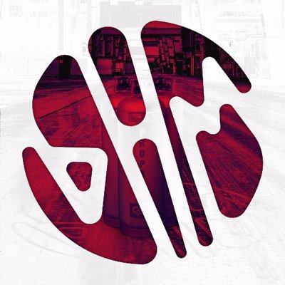

Algunos exponentes del Bass House son:
Jauz
Habstrakt
Ghastly
Joyryde
Y no puede faltar Martin Garrix V:

Bass House
El Bass House es un género de la música electrónica que surgió a finales de la década de los 90’s, como resultado de la Fusión entre Bass y House, o con géneros derivados como Deep House, Tech House y Future House, y con influencias de otros géneros relacionados con el Bass, como Dubstep, Drum and Bass, Electro House, Tech House, Fidget House, Dembow y Trap, también puede poseer influencias de Hip Hop.
Este género se caracteriza por estar compuesto de una base heredada del House, que puede ser hecha con Kicks, Claps o Snares, Rides, Hats o Hi-Hats muy notorios o de una base más compleja tipo breaks heredado de Breakbeat, y de Bajos distorsionados controlados por un “Low Frequency Oscillator” (LFO), especialmente Woobles, heredado del Bass. Uno de los Bajos es el Principal que es el que tiene la melodía, con bajones en el Pitch o con sonidos parecidos a los de Tech House o Future House, que determina el ritmo y otro el Complementario, que es el que acompaña a la melodía, dándole efectos notables. Este género usualmente oscila con pulsaciones que van de 125 a 128 bpm, pero también se lo puede encontrar a 140 bpm o a 130 bpm, este género contiene vocales que generalmente son de Pitch bajo. Se Considera que la primera canción de este género fue RIP Groove de Double 99 aunque, anteriormente, se habían hecho canciones House con influencias Bass, como A Bit Patchy de Switch, pero no fueron consideradas como Bass House. Se pueden encontrar canciones aún más antiguas con influencias entre el Bass y House pero sin ser categorizadas con el género Bass House.
Algunos exponentes del Bass House son:
Jauz
Habstrakt
Ghastly
Joyryde
Y no puede faltar Martin Garrix V: